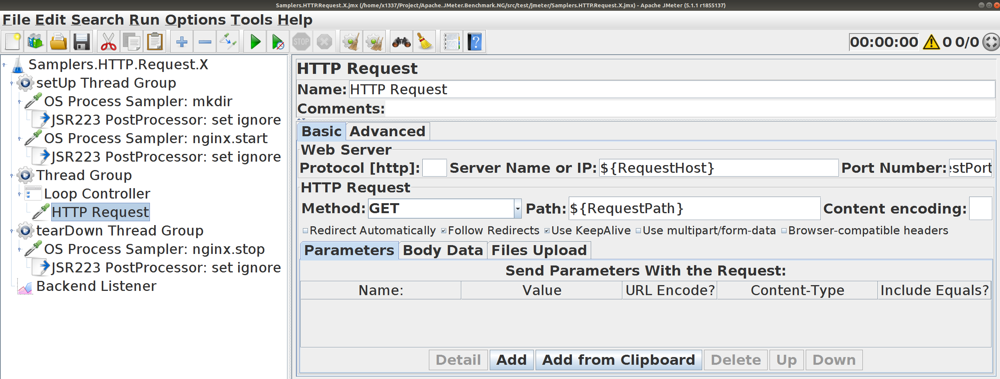
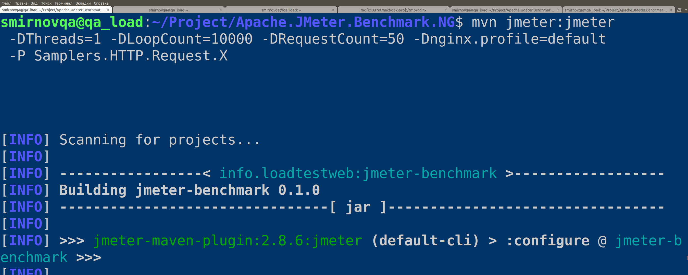
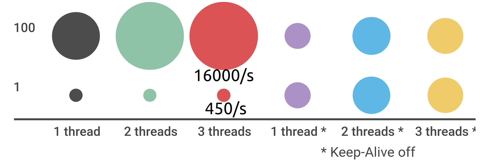
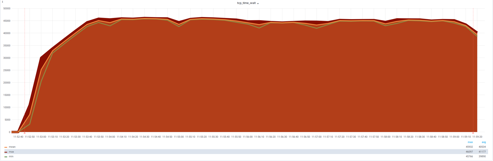
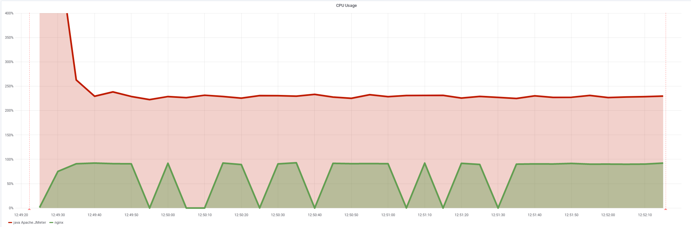
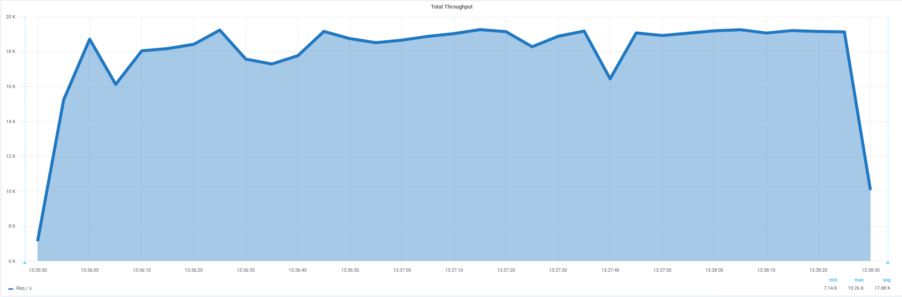
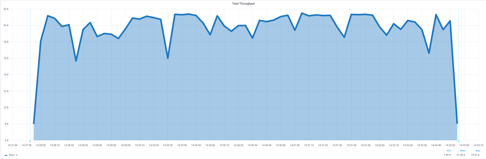
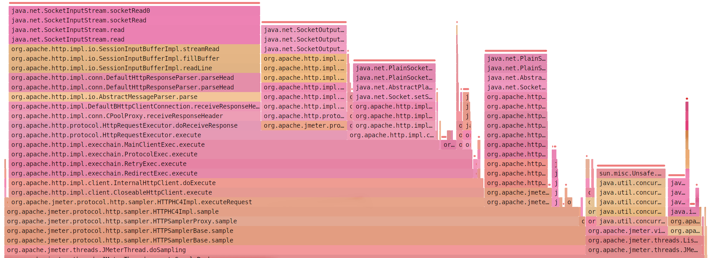
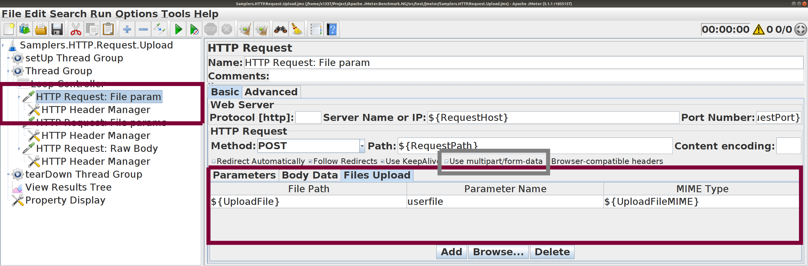

Ускоряем Apache.JMeter
Вячеслав Смирнов
Специалист по тестированию
Бываю на конференциях
Apache.JMeter
https://jmeter.apache.org , 2003 - настоящее время, активенHTTP(S), JMS, JDBC, Java/Groovy, FTP, SMTP, ... 50+
ClickHouse, InfluxDB, Graphite, Grafana, HTML
Распределённый запуск, CI
Maven, IntelliJ IDEA
Сообщество
Рассмотрим
HTTP Request. Максимальная интенсивность
HTTP Request. Скачивание и отправка
PostProcessor для HTML, XML, JSON
PreProcessor для XML и JSON
Статистика
Советы
HTTP RequestМаксимальная интенсивность
Samplers.HTTP.Request.X. Простой тест
Несколько GET-запросов на локальный HTTP-сервер

Запуск и основка NGinx в тесте
Параметры запуска настраиваются
Настраиваются параметры HTTP-запроса
хост, порт, путь
Количество последовательных запросов
с помощью Loop Controller (RequestCount)
Количество потоков и итераций
также настраивается
Параметры легко переопределяются
через опции maven и профили maven

HTTP Request. Серия экспериментов
HTTP Request Keep-Alive:
☑️ включить (по умолчанию)
üî≤ отключить
Количество последовательных запросов в сценарии:
üîº 1, 10, 50, 100
Тест со 100 последовательными запросами
в 35 раз интенсивнее теста с 1 запросом

© JMeter.Samplers.HTTP.Request.X
Как ускорить тест?Открывать меньше соединений. Keep-Alive полезен, не отключать его.
Не делать benchmark на Apache.JMeter
Сценарий на 10 запросов самый частый
Ускорим тест c 10 запросами в сценарииc 4000 req/s до 16 000 req/s и больше.
Понадобится
üìà telegraf, influxdb, grafana
üõ†Ô∏è netstat, bash
⚙️ /proc/sys/net/*
üìö документация на ядро Linux
üõ†Ô∏è SJK, Java Fligth Recorder
üìÉ настройки Apache.JMeter
Средняя интенсивность 4855/s,
но нестабильная: 500/s ... 16000/s
© Apache.JMeter report
И было 5.24% ошибок
Non HTTP response code: java.net.NoRouteToHostException/Non HTTP response message: Невозможно назначить запрошенный адрес (Address not available)
Подключения к NGinx также идут волнами
от 0/s до 1200/s
CPU: преимущественно системное время
%System в 3,5 раза выше, чем %User
netstat: tcp_time_wait (28 231)
Открывается слишком много соединений, лимит портов
Закрытые соединения с nginx (localhost:5555)
Одно ESTABLISHED и 27500 TIME_WAIT
netstat | grep -oP \
"^\w+\s+\d+\s+\d+\s+(\w+:\w+)\s+(localhost:5555)\s.*"
tcp 0 0 localhost:***** localhost:5555 ESTABLISHED
tcp6 0 0 localhost:***** localhost:5555 TIME_WAIT
tcp6 0 0 localhost:***** localhost:5555 TIME_WAIT
tcp6 0 0 localhost:***** localhost:5555 TIME_WAIT
tcp6 0 0 localhost:***** localhost:5555 TIME_WAIT
tcp6 0 0 localhost:***** localhost:5555 TIME_WAIT
tcp6 0 0 localhost:***** localhost:5555 TIME_WAIT
tcp6 0 0 localhost:***** localhost:5555 TIME_WAIT
tcp6 0 0 localhost:***** localhost:5555 TIME_WAIT
tcp6 0 0 localhost:***** localhost:5555 TIME_WAIT
tcp6 0 0 localhost:***** localhost:5555 TIME_WAIT
Linux: net.ipv4.ip_local_port_range (32768 60999)
Больше диапазон — больше соединений
Изначально диапазон на 28231 портов:
cat /proc/sys/net/ipv4/ip_local_port_range
32768 60999
Средняя интенсивность 7772/s (x 1,6 )
нестабильная: 3500/s ... 19000/s
© Apache.JMeter report
Теперь без ошибок
ошибки ушли
Ускорение в 1,6 раза — c 4800/s до 7700/snet.ipv4.ip_local_port_range (1024 60999)
netstat: tcp_time_wait (32 768 , не 59 975 )
новый лимит — симптомы полечены, проблема осталась
Linux: net.ipv4.tcp_max_tw_buckets (32768)
Расширим размер очереди TIME_WAIT (временно)
Со значения 32768 :
cat /proc/sys/net/ipv4/tcp_max_tw_buckets
32768
Linux: net.ipv4.tcp_max_tw_buckets (65536)
Расширим размер очереди TIME_WAIT (временно)
Со значения 32768 до значения 65536 (x 2):
echo 65536 > /proc/sys/net/ipv4/tcp_max_tw_buckets
Средняя интенсивность 7700/s (та же )
нестабильная: 3500/s ... 19000/s
© Apache.JMeter report
netstat: tcp_time_wait (40 000 - 46 000 )
лимита в 32768 больше нет — но не помогло

Увеличение размера очереди TIME_WAITnet.ipv4.tcp_max_tw_buckets (65536)
SJK: socketConnect (54,85% )
Apache.JMeter ждёт соединения
© SJK flame diagram
Linux: net.ipv4.tcp_tw_reuse (1)
Разрешим переиспользовать TIME_WAIT
По умолчанию для исходящих подключений нельзя использовать TIME_WAIT-соединения.
Разрешим:
echo 1 > /proc/sys/net/ipv4/tcp_tw_reuse
Средняя интенсивность 17300/s (x 3,6 )
более стабильная: 16500/s ... 19000/s
© Apache.JMeter report
CPU: больше не упираемся в систему
%User в 2 раза выше, чем %System
ProcStat: NGinx использует 100% CPU — предел
Apache.JMeter использует только 220% из 300% (3 потока)

netstat: tcp_time_wait (30 000 , снижение )
подозрительно ровная полка
Ускорение в 3,6 раза — c 4800/s до 17300/snet.ipv4.tcp_tw_reuse (1)
NGinx c конфигурацией по умолчанию x 2
добавим потоков, чтобы не упираться в CPU
worker_processes 2 ; # default 1worker_connections 512;
sendfile off;
tcp_nodelay on;
tcp_nopush off;
keepalive_timeout 75s;
keepalive_requests 100;
keepalive_disable msie6;
gzip off;
Средняя интенсивность 18600/s (x 3,9 )
более стабильная: 17800/s ... 19200/s

© Apache.JMeter report
Можно ли сделать так,
Apache.JMeter: jmeter.properties
httpclient.reset_state_on_thread_group_iteration
# Reset HTTP State when starting a new Thread Group iteration which means:
# true means next iteration is associated to a new user
# false means next iteration is associated to same user
# true involves:
# - Closing opened connection
# - resetting SSL State
#httpclient.reset_state_on_thread_group_iteration=true
Apache.JMeter: jmeter.properties
httpclient.reset_state_on_thread_group_iteration (false )
#---------------------------------------------------------------------------
# SSL configuration
#---------------------------------------------------------------------------
httpclient.reset_state_on_thread_group_iteration=false
Средняя интенсивность 19900/s (x 4,1 )
лучше, чем было при 100 запросах

© Apache.JMeter report
Ускорение в 4,1 раза — c 4800/s до 19900/shttpclient.reset_state_on_thread_group_iteration
Ускорители Apache.JMeter
Опция
Значение
Ускорение
httpclient.reset_state_on_thread_group_iteration
false
x4.1
Linux: net.ipv4.tcp_tw_reuse
1
x3.6
Linux: net.ipv4.tcp_max_tw_buckets
65536
Linux: net.ipv4.ip_local_port_range
1024 60999
x1.6
NGinx: worker_processes
2 (+1)
NGinx: keepalive_requests
1000 (+900)
Чем теперь занят быстрый Apache.JMeter?
Читает, пишет, собирает статистику

© SJK Apache.JMeter flame graphs
Чем теперь занят быстрый Apache.JMeter?
Читает, пишет, собирает статистику
© SJK Apache.JMeter flame graphs
HTTP RequestСкачивание файлов
Скачаем 1 ГБайт
сначала с настройкамо по умолчанию
mvn jmeter:jmeter -P Samplers.HTTP.Request.File \
-DThreads=1 -DLoopCount=1 -DRequestCount=10 \
-DRequestPath=/tmp/data/1GByte.tmp
Скачаем 1 ГБайт имея 4 ГБайт ОЗУ
сначала с настройками по умолчанию
dd if=/dev/urandom of=/tmp/data/1g.img \
bs=1 count=0 seek=1G
mvn jmeter:jmeter \
-P Samplers.HTTP.Request.File \
-DThreads=1 -DLoopCount=200 -DRequestCount=1 \
-DRequestPath=/tmp/data/1g.img
200 ГБайт скачались достаточно быстро
Параметр
Значение
Среднее время
1460 ms
Длительность
5 минут
Необходимая память
4096 МБайт
© Apache JMeter Dashboard
Трафик памяти огромный 1,81 ГБайт/сек
Память используется постоянно. 1 минута на GC
© Java Fligth Recorder file
Больше 1 ГБайт не скачать для Heap 4 ГБайт
Ошибка OutOfMemoryError уже для файла в 1100 МБайт
HTTP Sampler с настройками по умолчанию,
☑️ Save response as MD5 Hash
экономит память при скачивании больших файлов
200 ГБайт с MD5 скачивались дольше
Параметр
Значение
Среднее время
5475 ms
Длительность
18 минут 17 сек
Необходимая память
0 МБайт (минимум)
© Apache JMeter Dashboard
Трафик памяти при включенном MD5 нулевой
Память не использовалась вообще, CPU тоже меньше
© Java Fligth Recorder file
☑️ Save response as MD5 Hash 0 ,,
Как скачивать –±—ã—Å—Ç—Ä–æ–ú–æ–∂–µ—Ç быть curl /wget и bash помогут?
wget есть в Linux
wget-download.sh url
wget -S \
--progress=dot:mega \
--output-document=/dev/null \
$1
wget есть и в Microsoft Windows (MinGW)
wget-download.bat url
wget -S ^
--progress=dot:mega ^
--output-document=- ^
%1 ^
1>NUL
Можно ограничить максимальную скорость
wget-download.bat url
wget -S ^
--limit-rate=20m ^
--progress=dot:mega ^
--output-document=- ^
%1 ^
1>NUL
Прикинуться браузером с поддержкой gzip
wget-download.gzip.bat url
wget -S --progress=dot:mega ^
--header "User-Agent: Mozilla/5.0 (Windows NT 6.1; WOW64; rv:44.0) Gecko/20100101 Firefox/44.0" ^
--header "Accept: text/html,application/xhtml+xml,application/xml;q=0.9,*/*;q=0.8" ^
--header "Accept-Encoding: gzip, deflate " ^
--output-document=- %1 1>NUL
Передать первые 1000 байт в PostProcessor
wget-download.gzip.head.bat url
wget -S --progress=dot:mega ^
--header "User-Agent: Mozilla/5.0 (Windows NT 6.1; WOW64; rv:44.0) Gecko/20100101 Firefox/44.0" ^
--header "Accept: text/html,application/xhtml+xml,application/xml;q=0.9,*/*;q=0.8" ^
--header "Accept-Encoding: gzip, deflate" ^
--output-document=- %1 | ^
head -c 1000 | gzip -d -c -
JSR-223 PostProcessor встраивает wget
Программное заполнение параметров SampleResult
JSR-223 PostProcessor встраивает wget
Сохраняется Response Body
JSR-223 PostProcessor встраивает wget
Сохраняется Response Headers
Запустим тест с wget на 200 ГБайт
mvn jmeter:jmeter \
-P Samplers.OS.Process.wget.new \
-DLoopCount=200
-DRequestPath=/tmp/data/1g.img
200 ГБайт с wget скачивались очень быстро
Параметр
Значение
Среднее время
727 ms
Длительность
2 минуты 27 сек
Необходимая память
0 МБайт (минимум)
© Apache JMeter Dashboard
Скачать 200 ГБайт
Способ
Длительность
HTTP Request
5 минут
☑️ Save response as MD5 Hash
18 минут 17 сек
OS Process Sampler и wget
2 минуты 27 сек
OS Process Sampler + JSR-223 PostProcessor wget даёт ускорение в 2 раза,7 раз по сравнению с MD5.
HTTP RequestОтправка файлов
HTTP Request. Отправка файлов Пользуйтесь вкладкой Files Upload .
Комбинации вариантов передачи параметров
Вариант передачи
Один
С ☀️
С üêò
С üê¥
С ü¶Ñ
Parameters
☀️
☀️☀️
üö´
‚òÄÔ∏èüê¥ ‚òÄÔ∏è
Body Data
üêò
üö´
üö´
üö´
Files Upload (All)
üê¥ üꥂòÄÔ∏è üö´
üê¥üê¥ üö´
Files Upload (File Path)
ü¶Ñ ‚òÄÔ∏è
üêò
üö´
üö´
HTTP POST один параметр
üê¥ multipart/form-data
HTTP POST один параметр
üê¥ multipart/form-data

HTTP POST несколько параметров
üê¥üê¥ multipart/form-data
HTTP POST (raw body)
ü¶Ñ Загрузка тела запроса из файла
HTTP POST (raw body)
ü¶Ñ –ù—É–∂–Ω–æ –∑–∞–ø–æ–ª–Ω–∏—Ç—å только File Path
Всё просто прекрасно,Body Data ?
HTTP Request. Отправка файлов
OS Process Sampler: tar, sed, ...
Подготовить архив, распаковать, заменить в нём строки
HTTP Request. Отправка файлов ginzip , sed , ...Пользуйтесь вкладкой Files Upload ,